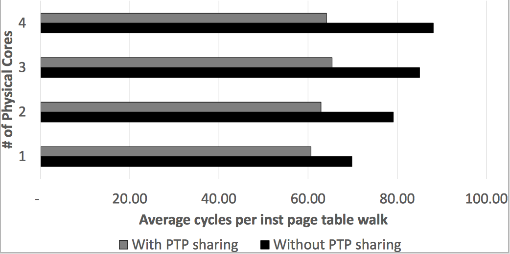

class: center, middle # On the Impact of Instruction Address Translation Overhead **Yufeng Zhou**¹, Xiaowan Dong², Alan L. Cox¹, Sandhya Dwarkadas² <div class="title-institution">¹Department of Computer Science, Rice University</div> <div class="title-email">{yufengz, alc}@rice.edu</div> <div class="title-institution">²Department of Computer Science, University of Rochester</div> <div class="title-email">{xdong, sandhya}@cs.rochester.edu</div> --- class: center, middle # Introduction <!-- --- --> <!-- --> <!-- # Large amounts of physical memory --> <!-- --> <!-- - Up to terabytes supported by modern computing systems. --> <!-- - To accommodate memory-hungry applications such as in-memory databases. --> <!-- --> <!-- --- --> <!-- --> <!-- # Virtual memory --> <!-- --> <!-- - Immensely useful --> <!-- - A linear address space abstraction: easy to program --> <!-- - Isolation: security and reliability --> <!-- - Overcommitment: use more memory than physically available --> <!-- - Share physical memory: deduplication --> <!-- - ... --> <!-- - Ubiquitous --> <!-- -- --> <!-- --> <!-- - Not without overhead --> <!-- - **Address translation** --> <!-- -- --> <!-- --> <!-- - Virtual-to-physical translation information stored in page tables --> <!-- -- --> <!-- --> <!-- - Accessing page tables to perform a translation (i.e. page walk) is expensive --> <!-- - 4-level page table organization in recent generations of x86 processors --> <!-- - Up to *hundreds* of cycles to do a single page walk --> <!-- -- --> <!-- --> <!-- - Translation lookaside buffers (TLBs) cache recently used translations --> <!-- - Down to <10 cycles --> <!-- - Problem solved? --> <!-- --> <!-- --- --> <!-- --> <!-- # A TLB has limited capacity --> <!-- --> <!-- - Cannot scale at the same rate as physical memory --> <!-- - Latency and energy efficiency constraints --> <!-- -- --> <!-- --> <!-- - From Haswell (2013) to Kaby Lake (2018), Intel's second-level TLB grew from 1024 entries to 1536 entries. --> <!-- - In the meantime, supported physical memory has more than doubled. --> <!-- --> <!-- --- --> <!-- --> <!-- # Instruction access vs data access --> <!-- --> <!-- - Different protections: RX vs. RW --> <!-- -- --> <!-- --> <!-- - Different sizes: data usually accounts for the majority of an application's memory footprint. --> <!-- -- --> <!-- --> <!-- - Different locality --> <!-- -- --> <!-- --> <!-- - Different "criticality" --> <!-- -- --> <!-- --> <!-- - Many have sought to reduce address translation overhead for data accesses. --> <!-- - Gorman et al. (WIOSCA 2010), Ingens (OSDI 16), SmartMD (ATC 17), Carrefour-LP (ATC 14), Illuminator (ASPLOS 18), Basu et al. (ISCA 13), Karakostas et al. (ISCA 15), TLB coalescing (MICRO 12, HPCA 14, ISCA 17), ... --> <!-- --- --> <!-- --> <!-- class: center, middle --> <!-- --> <!-- # But what about address translation overhead on instruction accesses? --> <!-- --> <!-- --- --> <!-- --> <!-- # Instruction Address Translation Overhead --> <!-- --> <!-- - Much less attention has been paid to the performance impact of this overhead, at either the architectural or operating system level. --> <!-- -- --> <!-- --> <!-- - On an Intel Xeon E3-1240 v5 (Skylake) processor, the PostgreSQL database executing a select-only workload spends up to **14.9%** of its execution cycles stalled on instruction address translation. --> <!-- -- --> <!-- --> <!-- - Intel documentation recommends that instruction address translation stalls be kept under **5%** of execution cycles. --> <!-- -- --> <!-- --> <!-- - Overhead exacerbated by two trends. --> <!-- 1. The ever increasing size and complexity of the applications. --> <!-- - The Clang compiler has increased in size from 31MB of x86 machine code in version 3.0 (2012) to 56MB in version 6.0.0 (2018). --> <!-- - A recent version of the Node.js run-time environment uses 20 shared libraries. --> <!-- -- --> <!-- 2. The ever increasing parallelism in modern applications and hardware platforms: greater competition for shared hardware resources, such as TLBs and caches. --> <!-- - Multi-core and SMT. --> <!-- - Multi-process applications (e.g. PostgreSQL) and multi-process workloads (e.g. parallel compilation with Clang). --> <!-- --> <!-- --- --> <!-- --> <!-- # Outline --> <!-- --> <!-- - Introduction --> <!-- - Superpages --> <!-- - Padding and Page Table Sharing --> <!-- - Conclusions and Future Work --> <!-- --> <!-- --- --> <!-- --> <!-- # x86 Address Translation --> <!-- --> <!--  --> <!-- --> <!-- --- --> <!-- --> <!-- # x86 Address Translation --> <!-- --> <!--  --> <!-- --> <!-- --- --> <!-- --> <!-- # x86 Address Translation --> <!-- --> <!--  --> <!-- --> <!-- --- --> <!-- --> <!-- # x86 Address Translation --> <!-- --> <!--  --> --- # Code Superpages: Missed Opportunities - Significant virtual-to-physical address translation overhead for instruction access. - PostgreSQL on a recent Intel Xeon processor: up to **14.9%** of execution cycles experience instruction address translation stalls. - Intel documentation recommends that this overhead be kept under **5%**. - Overhead exacerbated by two trends. 1. Applications are getting bigger and more complex. - The Clang compiler: 31MB (2012) → 56MB (2018). - A recent version of Node.js: 20 shared libraries. 2. The level of parallelism is increasing. - Multi-core and SMT. - Multi-process applications (e.g. PostgreSQL) and multi-process workloads (e.g. parallel compilation with Clang). - Superpages reduce address translation overhead. - Operating systems have supported superpages for a while now. - For example, FreeBSD automatically and transparently supports superpages on code from any file system. - Problem solved? ??? The level of parallelism is increasing: greater competition for shared hardware resources, such as TLBs and caches. --- # Code Superpages: Missed Opportunities - A single superpage policy for both code and data. - Current implementations of and prior work on superpage support in the OS. - *One policy does not fit all!* - Example: PostgreSQL - No superpage created under current policy. - A small change in policy and mapping ~2/3 of the main executable with superpages: **8.5%** reduction in execution cycles! --- # Outline - Introduction - **Superpages** - Padding and Page Table Sharing - Conclusions and Future Work --- # Superpages - Increase TLB coverage. - Modern processors support superpages of potentially multiple sizes. - TLBs provide a growing number of entries for superpage mappings. -- - Skylake TLB configuration. .right[] --- # OS Support for Code Superpages - Linux does not transparently support superpages on code from a regular file system. - FreeBSD automatically and transparently supports code from any file system. -- - Reservation-based page allocator - Incremental promotion - A conservative policy -- .right[] --- # The Impact of FreeBSD's Automatic Code Superpages Percentage of execution cycles servicing instruction address translation - user space.  --- # The Impact of FreeBSD's Automatic Code Superpages Percentage of execution cycles servicing instruction address translation - user space.  - No superpages on PostgreSQL under FreeBSD's default policy. --- # PostgreSQL Main Executable (5.953 MB) Page Fault Trace - First 2M Region <img src="./postgres_ktrace_1st.png" width="798.6" height="441.1"/> --- # PostgreSQL Main Executable (5.953 MB) Page Fault Trace <img src="./postgres_ktrace_1.png" width="1056" height="202"/> --- # PostgreSQL Main Executable (5.953 MB) Page Fault Trace <img src="./postgres_ktrace_2.png" width="1056" height="202"/> - I/O clustering -- - Bring in the missing 64KB clusters and promote? --- # Relaxing FreeBSD's Superpage Policy Normalized execution cycles under 4 different promotion thresholds.  --- # The Impact on Data Address Translation - The second-level TLB is shared between code and data. -- - Improving address translation performance in the ITLB can significantly reduce the address translation overhead for data accesses!  --- # PostgreSQL Main Executable (5.953 MB) Page Fault Trace <img src="./postgres_ktrace_2.png" width="1056" height="202"/> --- # PostgreSQL Main Executable (5.953 MB) Page Fault Trace <img src="./postgres_ktrace_3.png" width="1056" height="202"/> - Residual code region -- - Mapped as 4KB base pages - Hundreds of mappings - PostgreSQL accesses more than 64 of these pages. - 4KB page mappings spill into the STLB, potentially displacing 2MB page mappings for data. --- # Outline - Introduction - Superpages - **Padding and Page Table Sharing** - Conclusions and Future Work --- # Padding - Pad out the residual code region so that it can be mapped as a superpage. -- - Two ways - Ask the *linker* to bloat the executable segment up to the next superpage boundary. - The *kernel* automatically extends the executable mapping up to the next superpage boundary, back the residual code region with a reservation, and fill in the gap following residual code. - Optimization: pages backing the data segment can be used as part of the padding. --- # Page Table Sharing - Shared libraries - Too small to be mapped as superpages. - Common libraries are referenced across different processes and applications, e.g. libc, libcrypto, libm, libthr, libssl. -- - Share leaf-level page table pages! --- # Page Table Sharing  --- # Page Table Sharing - Leaf-level page table pages (PTPs) outlive the processes referencing them. - Attach the shared PTPs to the *vm_object*, which tracks a file's resident pages. - Use an unused and non-reserved bit in the higher level page table entry to mark the presence of a lower-level shared PTP in the page table hierarchy. - Force 2MB virtual alignment of (executable) text sections to maximize usage of shared PTPs across processes with different address space layouts. --- # Padding and Page Table Sharing PostgreSQL user-space results <img src="./postgres_padding_sptp_usr.png" width="781.5" height="459"/> --- # Page Table Sharing - De-duplicates page table data in the LLC. - Leads to significantly fewer data and instruction page table walk cycles. -- PostgreSQL average cycles per instruction page table walk with and without page table sharing.  --- # Padding and Page Table Sharing - Reduce the amount of work done in the OS. - Process creation and teardown become faster. -- - Padding: hundreds of leaf-level PTEs replaced with just a single upper-level PTE. - Page table sharing: - Insert entire shared PTPs directly at process creation. - Skip over shared PTPs during process teardown. -- <img src="./postgres_padding_sptp_os.png" width="626.4" height="339.6"/> --- # Padding and Page Table Sharing PostgreSQL user-space results <img src="./postgres_padding_sptp_usr_18.png" width="781.5" height="459"/> --- # Padding and Page Table Sharing Percentage of execution cycles servicing instruction address translation - user space.  --- # Padding and Page Table Sharing - Execution cycles reduced by more than the instruction address translation overhead. - The data side is synergistically benefiting from less contention in the STLB and caches. --- # Outline - Introduction - Superpages - Padding and Page Table Sharing - **Conclusions and Future Work** --- # Conclusions - The overhead of instruction address translation for a variety of widely used applications is non-trivial. - This overhead increases as the level of parallelism goes up in modern applications and hardware platforms. - Three techniques help reduce instruction address translation overhead and therefore reduce overall execution cycles. - Relaxing the superpage promotion policy for code. - Padding residual code. - Sharing page tables pages. - Improving address translation performance in the ITLB can reduce the address translation overhead for data accesses. - Many modern microarchitectures share the STLB between instruction and data translations. # Future Work - Interaction with compile-time optimizations. - Medium-sized mappings, e.g. 64KB mappings.